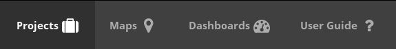
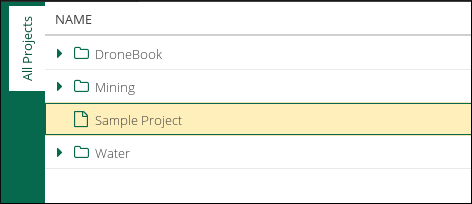
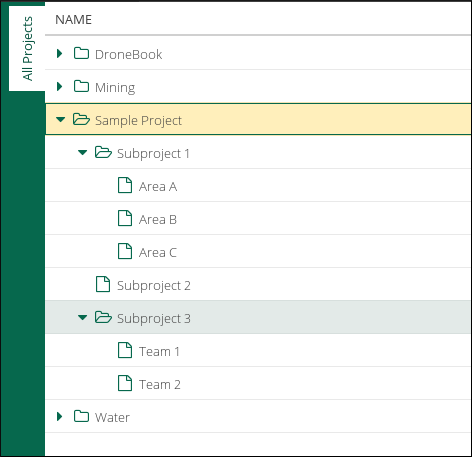
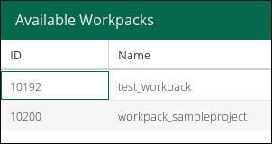
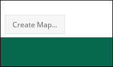
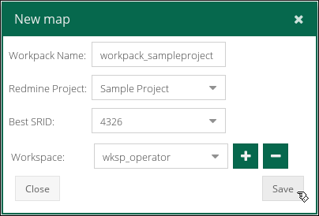
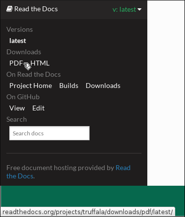
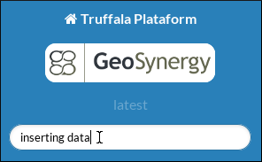

Landing Page¶
The Landing Page is a interface that was built to facilitate the daily use of Truffala Plataform.
Note
It’s designed to become like a game console interface, enabling the user to do quick tasks and easily get informations and reports.
Basicaly, on Landing Page, you’ll work with this four buttons:
Projects¶
When you click on Projects you area able to see the Projects Tree screen. This interface will help you managing the projects by provinding a easy interface to acess them.
For example, if we create a project called Sample Project, that is how it will be shown:
Hint
If you don’t have a project created, check How create your first project on Truffala.
If you left click on the project name, it will open a frame showing the Redmine screen of the currently project. Check the Redmine Interface of Truffala to get more information.
As you’ll creating subprojects, they are going to be showing as folders here. It has the function of facilitating your navigation and managing of the projects. For example:
Important
After create a subproject, you’ll need to reload the page for the new subprojects appears on the Projects Tree.
Maps¶
Inside Maps you can list and view all the Available Workpacks for all your projects.
Note
Workpack is ... TODO
They will be organized by two columns (ID and Name), as the follow picture:
Important
Every workpack you’ll create must be referenced by a Redmine Project.
If you don’t have a project created, check How create your first project on Truffala.
You can click on the workpack you want to acess and it will load on your screen.As the follow picture:
You’ll use this screen to create new workpack, to do so you need to click on Create Map... button on the left down.
Important
Every workpack you’ll create must be referenced by a Redmine Project.
If you don’t have a project created, check How create your first project on Truffala.
After click a window called New map will open. You will need fill some information, as the follow example:
Check the maps for see how to upload the geospatial data, configure the map viewer, how integrate the geospatial information with the project management and more capacibilities.
Dashboard¶
The Dashboard will help you by summarise all the relevant information contained within the Redmine. It provide management summaries, like: activity, amounts of things, charts, stuff, reports.
Waiting #40883 <https://synmine.kegsys.com/issues/40883> .
User Guide¶
The User Guide button will redirect you for this material that you’are currently reading. This guide is intended to be a quick but comprehensive guide to the plataform and show how it can help your daily work.
If you want to, you are able to download this guide in PDF with the lastest version of Truffala. Do as the follow picture:
Hint
You can use the search box to find what you are looking for faster. For example:
Warning
TODO
- Create a How to create your first project
- Link the Redmine Interface of Truffala
- Complete Dashboard
- Do the workpack definition
- Make a list for the SRID
- Check how the workspace will be handle.
- Create a How to create a workpack